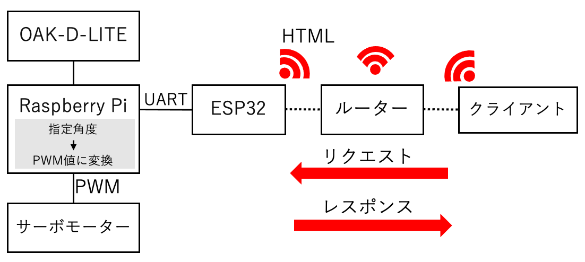
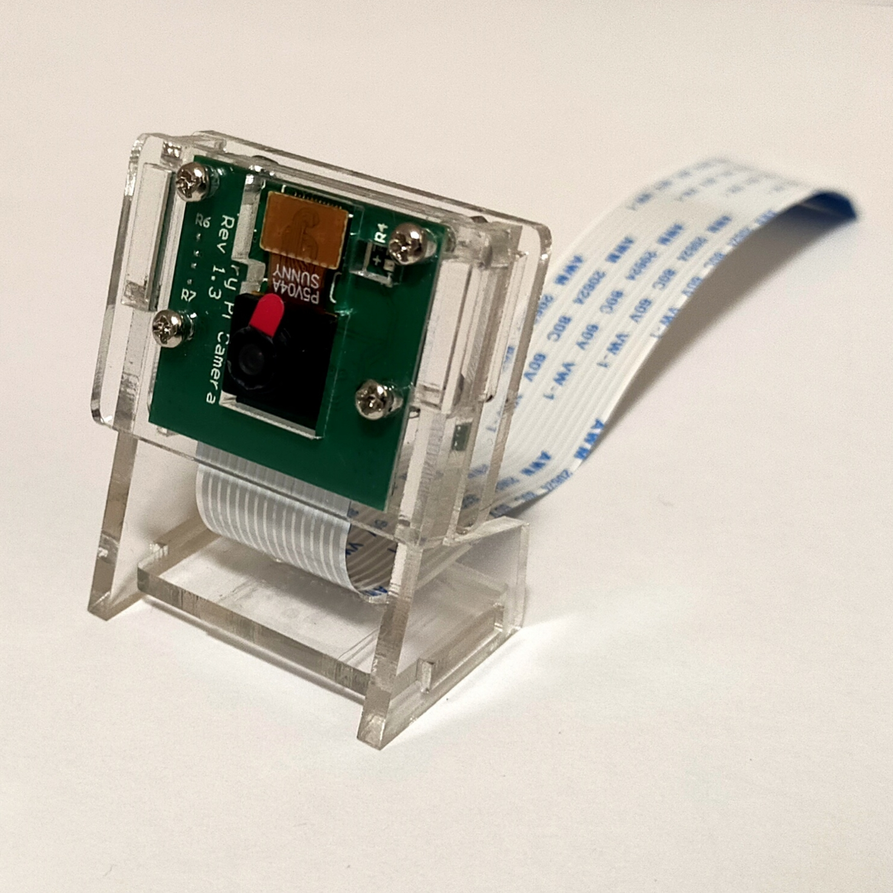
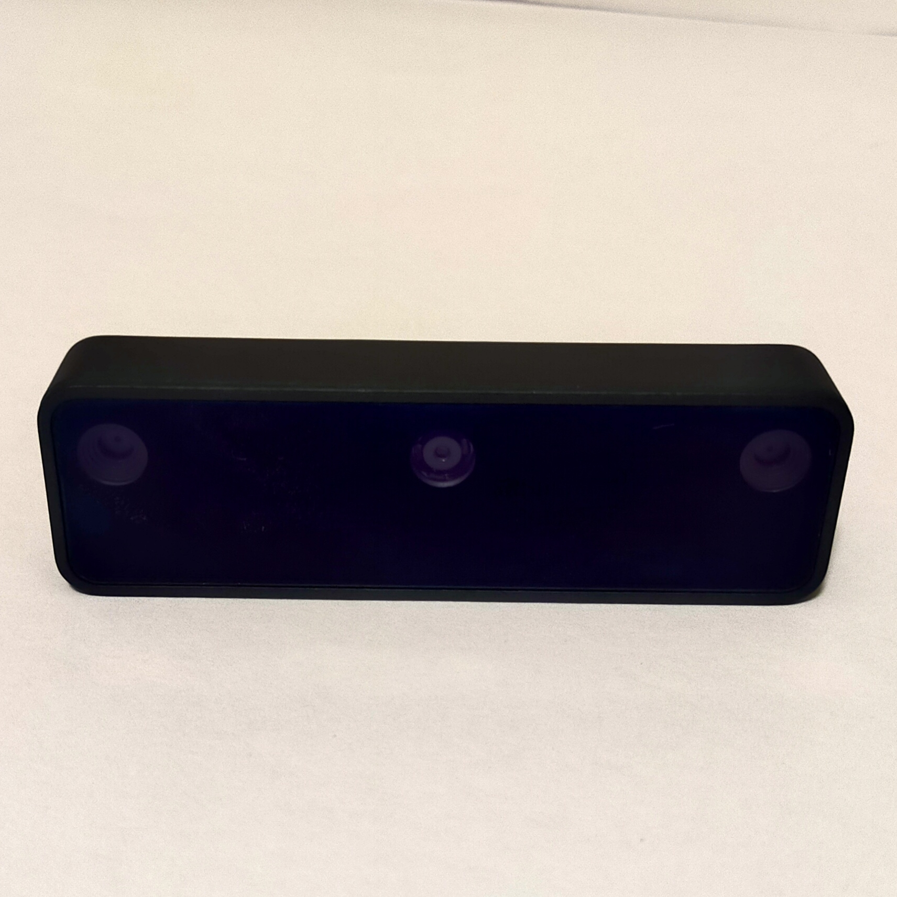
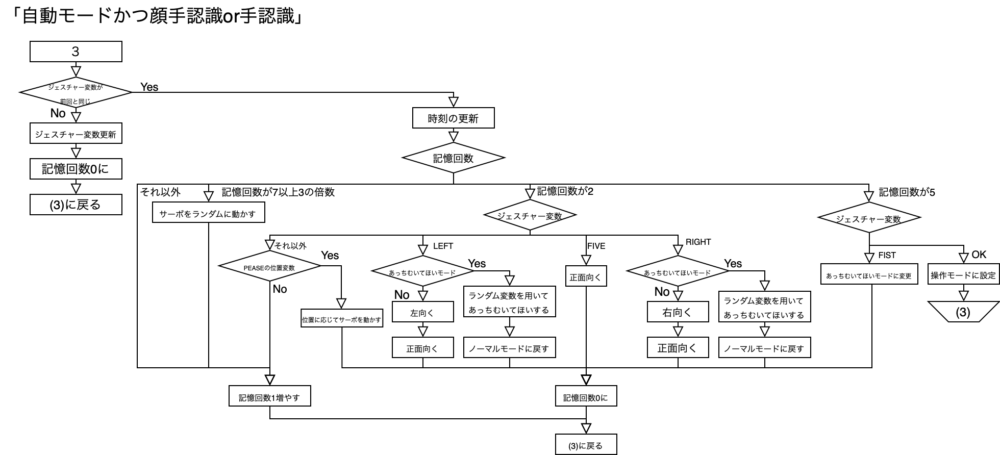

DETAILS
頭部分に主に使用したもの
・RasberryPi4 8GB
・ESP32
・OAK-D-LITE
・SG90サーボモーター×2
・ASRock H2R (HDMI 2-in-1 ルーター)
・単三電池×4/電池ボックス/5Vモバイルバッテリー
システム・回路(頭部分)
回路図
システム概要図

- 
PIカメラとOAK-D-Liteの比較
-

-
PIカメラ フレームレート
→約3.3FPS
実際のラグ
→約2.4s -

-
OAK-D-LITE フレームレート
→約18.3FPS
実際のラグ
→約0.7s


フローチャート全体図

実際にデモで行った動き
・スマホ・パソコンから操作


・顔追従


・ハンドジェスチャー操作

指差し指示 指差し指示（正面から) 

ピース追従 あっち向いてホイ 

・改善点
1.今回頭と体を合体して制御するところまでいかなかったので合体させる。
2.顔追従の際に追従より先に顔がフレームアウトした際にも、適切に追従を続けるようにするなど。
3.かわいい動作をもっと作る→自由度を増やす(ロール)
4.カメラ自体を顔にするのではなくカメラを胴体部につける:ハード的な視点
問題:根本のSG90がカメラの重さにより負担+足制御の負担(重心)
→長期的に動かすと仮定+足制御を考慮すると頭部分を軽くする必要があると感じた。
カメラを胴体につけた時のサーボ制御方法+頭がカメラのときでもより早く顔を追従するために...
→逆運動学を用いてサーボ制御が必要
問題:現在はプログラムのループ上にサーボ制御を組み込んでおり、サーボ制御時にはカメラの情報取得が止まってしまうので、逆運動学の式でサーボを動かしても滑らかかつ早く追従することができない。
ラズパイは画像処理とシリアル送ることに集中させ、ESP側でサーボ制御する。
この際、ラズパイとESP間で高速通信した際、カメラが停止する問題があったので通信方法を見直す。